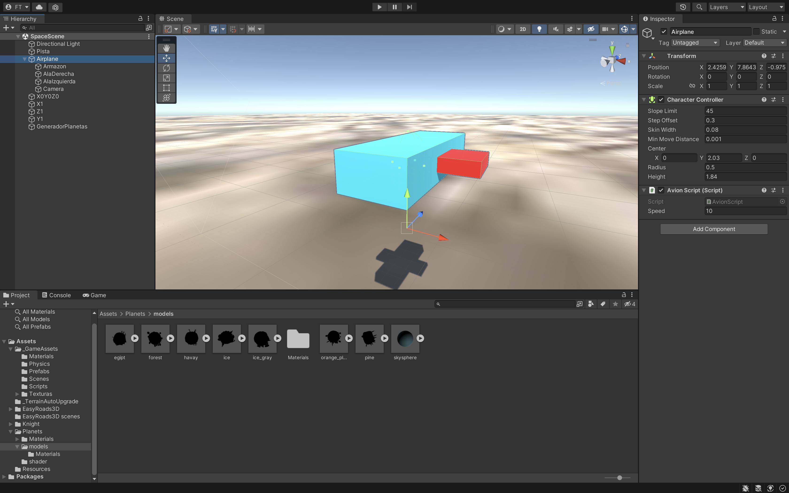

Creamos planetas en posiciones aleatorias y el avión volará sobre ellos. Para ello necesitaremos:
Para ello necesitaremos una estructura de carpetas que tendrán el
contenido necesario para hacer el juego que lo iremos incluyendo poco a poco:
_GameAssets
• Scenes.
o SpaceScene.
• Materials.
o Todos los objetos tienen que tener su material.
• Scripts.
o Avion.cs.
• Planets. Es la carpeta donde estarán los planetas cuando lo descarguemos.
o Descargar de: https://assetstore.unity.com/packages/3d/poly-planets-34894
Tendremos que crear dentro de esta escena:
• Pista que será un plane. Scale 100 , 1 , 100.
• Airplane.
o Armazon.
o AlaDerecha.
o AlaIzquierda.
o Camera.
• X0Y0Z0.
• X1.
• Z1.
• Y1.
• GeneradorPlanetas.

El Airplane mira hacia el forward (Z hacia delante). Componentes:
• Character Controller. Este componente se usará más para un personaje que para un avión
• Script Avion.cs.
• El Objeto Troncomovil esta formado por:
o Armazon.
o AlaDerecha.
o AlaIzquierda.
o Camera. La posicionamos en la parte de atrás del Avión mirando hacia delante.
Tenemos 4 GO vacios y cada uno estara en posiciones distintas para poder generar los planetas en
unas posiciones acotadas.
• X0Y0Z0 posicionado en -500, 0, -500 en X,Y,Z
• X1 posicionado en 500, 0, -500
• Z1 posicionado en -500, 0, 500
• Y1 posicionado en -500, 500, 500
GeneradorPlanetas Go Vacio. Y está formado por:
• Script GeneradorPlanetas.cs
• Variable
o int speed.
• Update().
• Para la dirección lo haremos con con Axis Vertical (Arriba y Abajo) y Horizontal
(Derecha e Izquierda) (GetAxis).
• Para rotar usarmos Rotate() en los 3 ejes.
• Para avanzar sin pulsar nada usaremos el método Move() recogiendo el componente
CharacterController y que vaya hacía delante.
• Variables
o GameObject[] prefabPlaneta. Pasaremos por parámetro los planetas.
o Transform tX0Z0Y0, tX1, tZ1, tY1.
o int numMaxplanetas = 100.
• Start().
• Recorrer el Array y llamar a un metodo GenerarPlaneta().
• GenerarPlaneta().
o Recogemos unas variables para saber dónde vamos a posicionar el planeta que vamos a crear.
- float x = Random.Range entre la tX0Y0Z0.position.x y tX1.position.x.
- float y = Random.Range entre la posicion y de X0Y0Z0 y la posicion y de Y1.
- float z = Random.Range entre la posicion z de X0Y0Z0 y la posicion z de Z1.
o Seleccionamos un planeta de forma aleatoria del array de planetas.
o Creamos el planeta que hemos seleccionado.
o Y lo posicionamos en las variables x,y,z.